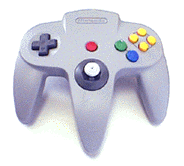
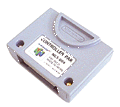
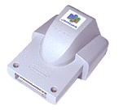

The SI is the interface used for exchanging data with a Controller. Each Controller is designed so that you can add a Controller Pak or a Rumble Pak, so the SI is also used for exchanging data with the Controller Pak or Rumble Pak.
In other words, the following devices are connected to the SI:
|  |  |
|  |
Nintendo® Confidential
Copyright © 1999
Nintendo of America Inc. All Rights Reserved
Nintendo and N64 are registered trademarks of Nintendo
Last Updated March, 1999